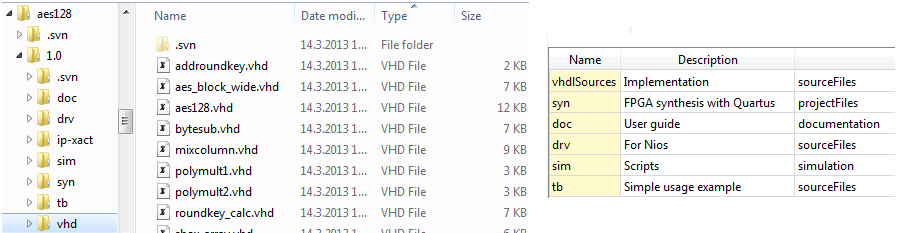

File sets editor contains a summary table regarding each file set within the component. This table can be used to add and remove file sets.
Name is a mandatory identifier for the file set.
Group identifiers are optional and can be used to describe the function or purpose of the file with a single word. Group identifiers can contain multiple identifiers and the possible words are not limited. However, the editor suggests the following options:
Description is optional field for detailed description of the file set.
Right clicking an item in the editor provides a context menu that can be used to:

Below the file sets editor is a dependency table to display the dependencies between the files within all the file sets. File dependencies are typically introduced by include directives (e.g. in C) or instantiation of other modules (e.g. sub-modules in Verilog). Kactus2 uses plugins to automatically analyse dependencies based on the file types.
Status shows if the file has changed since the last dependency analysis.
Path identifies the file.
Filesets shows the fileset(s) containing the file.
# column is used create custom dependencies. The first left-click on the mouse starts the dependency from the file on the clicked line and the second click ends the dependency to the file on the line. The first file is now dependent on the second file.
Dependencies show the dependencies for the file. A file dependent on another has a round end point of the arrow on the line whereas the required file has an arrow head on the line. Automatically created dependencies are denoted in black and user created dependencies in magenta. A file can have arbitrary number of depenedencies. Clicking on the arrow shows additional information about the dependency in the Dependency Information below.
Description displays the description of the file dependency.
Bidirectional indicates that both of the files are dependent on each other.
Locked can be set to protect the depencendy from being changed without expicitly re-opening the lock.
Reverse Direction changes the dependent and prerequisite file relation to the opposite of the current state.
EXAMPLE. The names of filesets do not need to be same as directories
(vhdlSource vs. vhd/) but they can be (e.g. syn).
